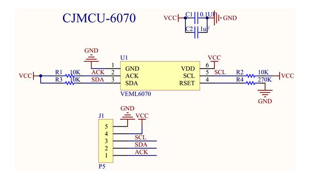

VEML6070 UV Light Sensor Module#
▷ Vishay VEML6070#
ไอซี VEML6070 (Datasheet) ผลิตโดยบริษัท Vishay Semiconductor เป็นเซนเซอร์วัดความเข้มแสงอัลตราไวโอเลต หรือ รังสียูวี (Ultraviolet: UV) และให้เอาต์พุตแบบดิจิทัล (Digital UV Light Sensor) ภายในไอซีได้รวมโฟโต้ไดโอด (Photodiode) ซึ่งทำหน้าที่เป็นตัวรับแสง วงจรขยายสัญญาณไฟฟ้า และวงจรแปลงให้เป็นข้อมูลดิจิทัล เป็นต้น
แสงยูวีจากดวงอาทิตย์ มีความยาวคลื่นประมาณ 100 nm ถึง 400 nm และมีการจำแนกเป็นประเภทย่อย ตามย่านความยาวคลื่นได้ดังนี้
- UV-A: 320 nm ~ 400 nm
- UV-B: 280 nm ~ 320 nm
- UV-C: 100 nm ~ 280 nm
คุณสมบัติของ VEML6070
- ช่วงแรงดันไฟเลี้ยง (VCC): 2.7V ~ 5.5V
- ปริมาณกระแสไฟฟ้าที่ใช้ (Current Consumption): ประมาณ 100 μA ขณะทำการวัด และ 1μA เมื่ออยู่ในโหมด Shutdown
- มีความไวแสงสูงสุดสำหรับความยาวคลื่น 355 nm หรือในช่วงความยาวคลื่น 335nm ~ 375nm (UV-A)
- มีขาสำหรับใช้กับตัวต้านทานภายนอก (R_SET) เพื่อกำหนดระดับความไวแสงของเซนเซอร์
- เชื่อมต่อด้วยบัส I2C (แอดเดรสแบบ 7 บิต เท่ากับ 0x38 และ 0x39) ใช้ความเร็วได้ถึง 400kHz
- 0x38 ใช้สำหรับเขียนค่าลงในรีจิสเตอร์คำสั่ง และอ่านค่าไบต์ LSB
- 0x39 ใช้สำหรับอ่านค่าไบต์ MSB
- มีขา ACK สำหรับสัญญาณ Interrupt / Alert และเป็นเอาต์พุต สามารถโปรแกรมการทำงานให้แจ้งเตือน ในกรณีที่มีการวัดความเข้มแสงได้สูงเกินกว่าค่าที่กำหนดไว้
- ให้ค่าเป็นข้อมูลดิจิทัลขนาด 16 บิต (0..65535)
รูป: ไอซี VEML6070 (ซ้าย) และแผนผังแสดงองค์ประกอบภายในของไอซี (Block Diagram)
รูป: ช่วงความยาวคลื่นแสง UV ที่เหมาะสมสำหรับการวัดความเข้มแสงด้วย VEML6070
รูป: ตัวอย่างการเชื่อมต่อกับไมโครคอนโทรลเลอร์ด้วยบัส I2C
รูป: การกำหนดค่าบิตในรีจิสเตอร์คำสั่ง (Command Register) ของ VEML6070
คำสั่ง (Command) ประกอบด้วยบิตที่สำคัญดังนี้
- บิตที่ 0: SD (Shutdown Bit) ถ้า SD=0 (normal mode) คือ เปิดใช้งานปรกติ แต่ถ้า SD=1 (shutdown mode) จะอ่านค่าจากเซนเซอร์ได้ค่าเดิม (ไม่มีการอัปเดตค่าใหม่)
- บิตที่ 3-2: IT[1:0] สำหรับกำหนดค่า Integration Time มี 2 บิต
- บิตที่ 4: ACK_THD (Acknowledge threshold value setting)
- บิตที่ 5: ACK (Acknowledge activity setting)
ค่าของเซนเซอร์ที่วัดได้ จะขึ้นอยู่ความเข้มแสง (Light Intensity) และระยะเวลาในการเปิดรับแสง (Integration Time: IT) สำหรับตัวรับแสงที่เป็นโฟโต้ไดโอด
กระแสที่เกิดขึ้นที่ตัวโฟโต้ไดโอดจะเป็นสัญญาณอินพุตให้วงจรขยายสัญญาณ OpAmp ที่มีการต่อวงจรในรูปแบบที่เรียกว่า Transimpedance Amplifier วงจรประเภทนี้ทำหน้าที่แปลงปริมาณกระแสที่เกิดขึ้นในช่วงเวลาดังกล่าว ให้เป็นแรงดันไฟฟ้า (สัญญาณแบบแอนะล็อก) จากนั้นจึงนำไปผ่านวงจร ADC (Analog-to-Digital Converter) เพื่อแปลงข้อมูลแบบดิจิทัลขนาด 16 บิต
ตาราง: ความสัมพันธ์ระหว่างค่า Integration Time (IT) และ R_SET
ถ้าเลือกใช้ตัวต้านทาน R_SET=270kΩ ก็จะคำนวณค่า Refresh Time (มิลลิวินาที) ซึ่งเป็นระยะเวลาในการรอให้เซนเซอร์ทำงานก่อนจะอ่านค่าในครั้งถัดไปได้ดังนี้ (ใช้ความสัมพันธ์แบบเชิงเส้น)
ในกรณีที่เลือกใช้ค่า R_SET = 270 kΩ จะมีค่า ** 1T=112.5ms**
การแปลงค่าที่อ่านได้จาก VEML6070 ให้เป็นค่า UV Index (UVI) ซึ่งมีค่าอยู่ในช่วง 0 ถึง 12 (ยิ่งมีค่าสูง จะเป็นอันตรายต่อผิวหนังมาก) ขึ้นอยู่กับ R_SET ที่เลือกใช้ และการตั้งค่า Integration Time (IT) ตามค่าตัวอย่างในตารางต่อไปนี้
รูป: ความสัมพันธ์ระหว่าง UV Index กับค่าที่ได้จาก VEML6070 และ IT
▷ โมดูลเซนเซอร์แสงยูวี VEML6070#
ในปัจจุบันมีโมดูลเซนเซอร์แสงยูวีที่ใช้ไอซี VEML6070 จากหลายบริษัท และสามารถนำมาต่อวงจรทดลองได้อย่างสะดวก ตัวอย่างโมดูลได้แก่
- Adafruit VEML6070 UV Index Sensor Breakout
- Seeed Studio Grove VEML6070
- CJMCU-6070
- GY-VEML6070
รูป: โมดูล Adafruit VEML6070 (มีตัวต้านทาน R_SET = 270k)
รูป: โมดูล Grove VEML6070 UV Sensor (มีตัวต้านทาน R_SET = 270k)
รูป: โมดูล CJMCU-6070 (มีตัวต้านทาน R_SET = 270k)

รูป: แผนผังวงจรไฟฟ้าของโมดูล CJMCU-6070
รูป: โมดูล GY-VEML6070 (มีตัวต้านทาน R_SET = 270k)
รูป: แผนผังวงจรไฟฟ้าของโมดูล GY-VEML6070
▷ การเขียนโค้ด Arduino สำหรับ VEML6070#
หากต้องการเขียนด้วย Arduino ก็มีไลบรารีสำหรับ VEML6070 ให้เลือกใช้งานได้ เช่น
แต่ลองมาดูตัวอย่างการเขียนโค้ด Arduino โดยไม่จำเป็นต้องใช้ไลบรารี และสามารถนำไปทดลองได้กับบอร์ดไมโครคอนโทรลเลอร์ เช่น ESP32 (เลือกใช้ขา GPIO 16 / 17 สำหรับ I2C SDA / SCL) และ Arduino Uno/Nano (ใช้ขา Arduino A4 / A5 สำหรับ I2C SDA / SCL ตามลำดับ)
ในโค้ดตัวอย่างนี้ ได้เลือกใช้ค่า Integration (IT) เท่ากับ 1T และโมดูล VEML6070 ที่นำมาใช้งานมีค่า R_SET=270k
#include <Wire.h>
#ifdef ESP32
#define I2C_SDA_PIN (16)
#define I2C_SCL_PIN (17)
#endif
#define I2C_ADDR (0x38)
#define CMD_REG_DEFAULT_VALUE (0x02)
#define IT_1T_HALF (0b00)
#define IT_1T (0b01)
#define IT_2T (0b10)
#define IT_4T (0b11)
void setup() {
Serial.begin( 115200 );
#ifdef ESP32
Wire.begin( I2C_SDA_PIN, I2C_SCL_PIN );
#else
Wire.begin( ); // use A4=SDA and A5=SCL pins for Arduino Uno/Nano
#endif
Wire.setClock( 400000 ); // 400kHz
for( int i=0; i < 3; i++ ) {
i2c_scan();
delay(2000);
}
// Initialize the VEML6070 sensor.
init_sensor();
}
void i2c_scan() {
int n_devices = 0;
Serial.println( "Scanning I2C bus..." );
Serial.print( " " );
for ( uint8_t col=0; col < 16; col++ ) {
Serial.printf( "%3x", col );
}
Serial.println( "" );
uint8_t addr=0;
for( uint8_t row=0; row < 8; row++ ) {
Serial.printf( "%02x:", row << 4 );
for ( uint8_t col=0; col < 16; col++ ) {
if ( row == 0 && addr<=1 ) {
Serial.print(" ");
} else {
Wire.beginTransmission( addr );
if ( Wire.endTransmission()>0 ) {
Serial.printf( " --" );
} else {
Serial.printf( " %2x", addr );
n_devices++;
}
}
addr++;
}
Serial.println( "" );
}
Serial.println( "---------------------\n\n" );
Serial.flush();
}
void init_sensor() {
Wire.beginTransmission( I2C_ADDR );
// Use integration time: 1T.
Wire.write( (IT_1T<<2) | CMD_REG_DEFAULT_VALUE );
Wire.endTransmission();
delay( 500 );
}
uint16_t read_uv_sensor() {
uint16_t value = 0x00;
Wire.requestFrom( I2C_ADDR+1, 1 ); // read MSB
delayMicroseconds(10);
if( Wire.available() == 1 ) {
value = Wire.read();
}
value <<= 8;
Wire.requestFrom( I2C_ADDR, 1 ); // read LSB
delayMicroseconds(10);
if( Wire.available() ) {
value |= Wire.read();
}
return value;
}
const char *UVI_LEVELS[] = {
"Low", "Moderate", "High", "Very High", "Extreme"
};
void loop() {
int uv_level ;
uint32_t value = read_uv_sensor();
// note: UVI conversion (R_SET = 270k, IT = 1T)
if ( value <= 560 ) {
uv_level = 0;
} else if ( value <= 1120 ) {
uv_level = 1;
} else if ( value <= 1494 ) {
uv_level = 2;
} else if ( value <= 2054 ) {
uv_level = 3;
} else {
uv_level = 4;
}
String str = "UV: ";
str += value;
str += " ";
str += UVI_LEVELS[ uv_level ];
Serial.println( str.c_str() );
delay(1000);
}
รูป: ตัวอย่างข้อความเอาต์พุตใน Arduino Serial Monitor ที่ได้จากการทำงานของโค้ดตัวอย่าง
รูป: การทดลองต่อวงจรโดยใช้บอร์ด ESP32 ร่วมกับโมดูล GY-VEML6070
รูป: การใช้แผง UV LEDs (มีความยาวคลื่นประมาณ 395-400nm ดังนั้นจึงมองเห็นด้วยตาเปล่าเป็นสีม่วง) และวัดระดับความเข้มแสงด้วยโมดูล GY-VEML6070
▷ กล่าวสรุป#
บทความนี้ได้นำเสนอการใช้งานโมดูลที่มีไอซี VEML6070 ซึ่งเป็นเซนเซอร์แบบดิจิทัลสำหรับการวัดความเข้มแสงยูวี (Ultraviolet: UV) โดยนำมาทดลองใช้งานร่วมกับบอร์ดไมโครคอนโทรลเลอร์ ESP32 และ Arduino Nano และเขียนโปรแกรมด้วย Arduino IDE
This work is licensed under a Creative Commons Attribution-ShareAlike 4.0 International License.
Created: 2022-10-22 | Last Updated: 2022-10-23